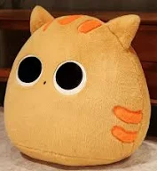
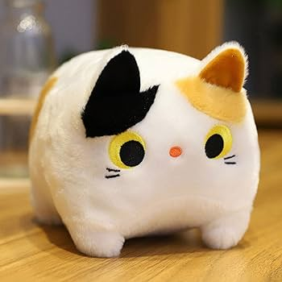

GATO NARANJA
Los gatos no son solo unas criaturas adorables y únicas en el reino animal, sino que también esconden algunas curiosidades de lo más llamativas. Sin ir más lejos, los gatos naranjas tan comunes en los entornos domésticos poseen algunas características diferenciales

Algunos son famosos
Gatos cinematográficos como Garfield o el Gato con Botas, de la película Shrek son dos ejemplos representativos entre la cultura pop. En el ámbito literario, aparecen otros personajes de pelo naranja, como el ‘Gato Weasley’, de Ron, en Harry Potter, o Buttercup, la revoltosa mascota de Katniss y Prim en Los Juegos del Hambre.
GATO TRICOLOR
Un gato tricolor es aquel que tiene entre sus colores el naranja, el blanco y el negro. El color naranja esta ligado al cromosoma X, que contiene un gen que determina el color (naranja o no naranja, en cuyo caso será negro).
Los gatos tienen los cromosomas XY, por lo tanto solo tienen un cromosoma X y un solo gen que puede ser naranja o no.
Pero las gatas tienen los cromosomas XX, lo que permite que un gen determine el color naranja y el otro no. Esto es lo que genera la aparición de los tres colores.

Existe una leyenda, cuyo origen se situa en el siglo XII en los monasterios del norte de Tíbet. Cuenta dicha leyenda que los monjes solían estar en permanente desacuerdo, discutiendo sobre cuestiones teológicas pero sin escucharse entre ellos ni llegar a un acuerdo. Esto creaba un gran malestar.